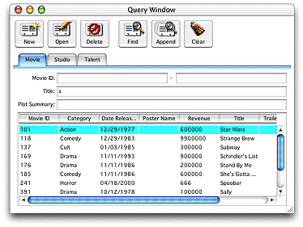

| PATH |

The Direct to Java Client approach provides the richness of a Java Client application without as much work. Direct to Java Client is an add-on to Java Client that dynamically generates user interfaces. Instead of designing a user interface for your application, Direct to Java Client does it for you. Figure 7-1 shows the user interface of a typical Direct to Java Client application.
Figure 7-1 A sample Direct to Java Client application

© 2001 Apple Computer, Inc.